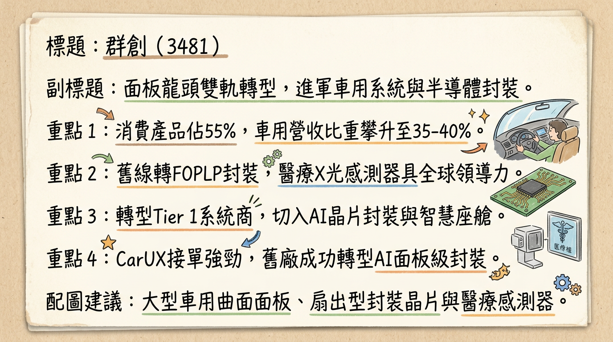
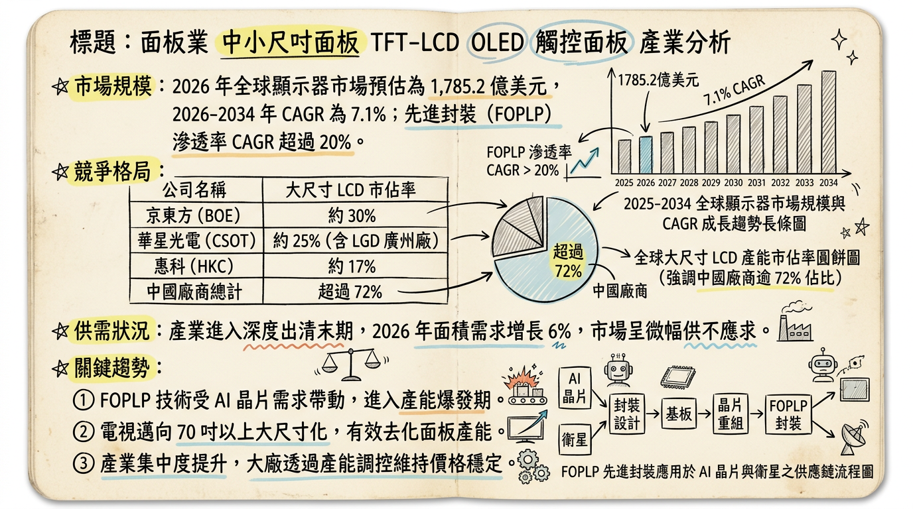
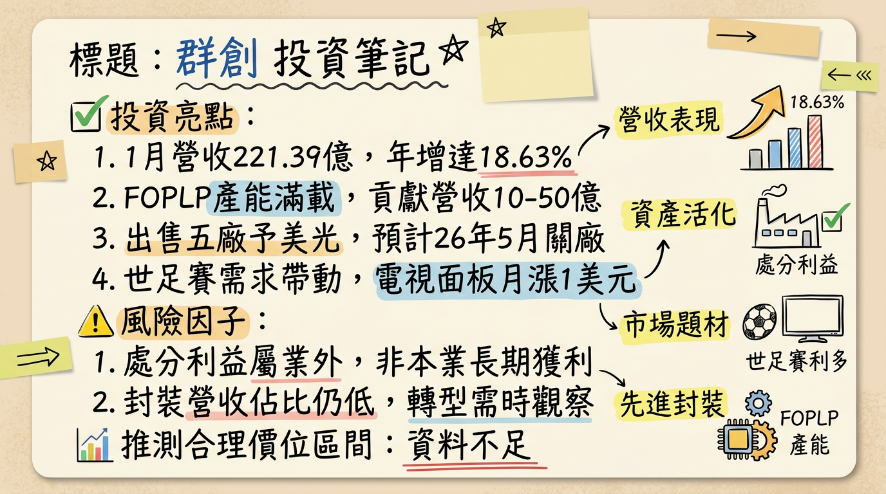

群創（3481）正成功執行「雙軌轉型」策略，從傳統面板製造商轉型為具備先進封裝 (FOPLP) 和智慧車用 (CarUX) 兩大成長引擎的控股型科技公司。隨著FOPLP打入SpaceX供應鏈，車用業務因併購Pioneer而擴張，以及面板本業受惠於國際賽事需求回溫，2026年營運有望在資產活化與高附加價值產品推動下顯著改善，重回成長軌道。
群創光電（3481）是一家台灣面板製造商，正積極從傳統顯示器業務轉型，聚焦於高附加價值應用領域。公司推動「雙軌轉型」策略，將營運模式重塑為一家擁有多元成長引擎的科技公司，涵蓋「顯示器領域」與「非顯示器領域」業務。
主要業務與產品線：* 策略上採取「按需生產」，不會賠本出貨，並透過資產整併與產品轉型來應對市場壓力。
* 2026年第一季營運預計受惠於世足賽與品牌備貨，電視面板需求將回溫。
* 成功利用舊世代面板產線轉型發展FOPLP技術，並於2025年正式量產。
* 已打入SpaceX供應鏈，為美系客戶供應低軌衛星地端接收元件封裝，訂單能見度已達2026年中，產能滿載且良率達九成。
* 相較傳統晶圓級封裝，FOPLP具有超大面積生產優勢與成本效益，能有效提升效率並降低成本。
* 規劃於2026年持續投入RDL（重新分佈層）與TGV（玻璃穿孔）等先進封裝關鍵技術資本支出。
* 智慧車用 (CarUX)：
* 透過子公司CarUX併購日商Pioneer，從單純的車用面板供應商，轉型為具備軟硬整合能力的Tier 1系統整合商。
* 預計併入Pioneer後有望使車用營收翻倍增長，並規劃2027年展現智慧座艙綜效。
* 已推出智能調光後照鏡等創新車用產品。
* 其他應用：
* 積極布局Micro LED及共同封裝光學（CPO）等半導體相關技術。
* 深化智慧製造與智慧交通運輸領域應用。
營收結構：| 產品應用 | 2025年Q3營收比重 | 2025年Q2營收比重 | 2026年預估 |
|---|---|---|---|
| 電視 | 29% | - | 約三成 |
| 車用產品 (CarUX) | 26% | - | 25%以上，目標35-40% |
| 可攜式電腦 | 20% | - | - |
| 手機及商用產品 | 21% | - | - |
| 桌上型螢幕 | 4% | - | - |
| 顯示器領域群合計 | 72% | 56% | - |
| 非顯示器領域群合計 | 28% | 44% | - |
| 月份 | 金額 (億元) | 月增率 MoM | 年增率 YoY |
|---|---|---|---|
| 2026年1月 | 221.39 | 3.3% | 18.6% |
| 2025年12月 | 214.36 | 25.2% | 19.2% |
| 2025年11月 | 171.24 | -5.9% | -8.9% |
| 2025年10月 | 182.07 | -8.3% | 7.8% |
| 2025年9月 | 198.61 | 6.3% | 2.7% |
| 2025年8月 | 186.92 | -3% | 1.1% |
| 季度 | 營收 (億元) | 毛利率 (%) | 營業利益率 (%) | 稅後淨利率 (%) | EPS (元) |
|---|---|---|---|---|---|
| 2025年Q3 | 578 | 7.89 | -1.69 | 0.33 | 0.01 |
| 2025年Q2 | 566 | 8.38 | -1.38 | -1.20 | -0.10 |
| 2025年Q1 | 547 | 7.57 | -2.22 | 1.94 | 0.04 |
| 2024年Q4 | 561 | 2.46 | -8.05 | 17.03 | 1.05 |
| 2024年Q3 | 567 | 9.02 | -1.42 | 0.89 | 0.07 |
| 年度 | 營收 (億元) | EPS (元) | 備註 |
|---|---|---|---|
| 2024年實際 | 2,165 | 0.76 | |
| 2025年預估 | 2,265.15 | -0.06 | 群益證券預估 |
| 2025年預估 | 2,267.50 | 0.01 | 本土投顧預估 |
| 2025年預估 | - | -0.16 | FactSet 調查中位數 |
群創（3481）暨子公司睿生光電（6861）將共同於2026年3月12日14時30分舉行上半年法說會，報告2025年第四季營運成果及未來展望。
管理層發言與 Guidance (根據2025年下半年法說會內容及近期發言)：* 訂單能見度已達2026年中，預估2026年全年貢獻營收可望超過10億元。
* 2026年將持續投入RDL與TGV等先進封裝關鍵技術資本支出。
* 規劃2027年展現智慧座艙綜效。
* 法人預期2026年車用業務占比可望提升至35%至40%，高於2025年的25%至30%。
* 業界將持續採「按需生產」策略，面板價格可望持穩，預期面板整體供需維持平衡。
* 預估Non-display sector（非顯示器領域群）、Non-commodity sector（商用顯示器）、Commodity sector（消費性顯示器）出貨都將較2025年第三季衰退個位數幅度 (2025Q3法說會展望，現已進入2026Q1)。
* 2025年第三季資本支出為24億元。
* 2024年第四季資本支出為39億元。
| 券商名稱 | 目標價 (元) | 評等 | 日期 | 2025年EPS預估 (元) | 2026年EPS預估 (元) |
|---|---|---|---|---|---|
| 群益證券 | 25.8 | 買進 | 2026年1月6日 | -0.06 | 0.24 |
| 摩根士丹利 (大摩) | 11.5 | 中性 | 2026年1月4日 | - | - |
| 本土投顧 | 19.0 | 買進 | 2026年1月4日 | 0.01 | 0.49 |
| FactSet 調查中位數 | 21.0 | - | 2026年1月22日 | -0.16 | - |
| 摩根士丹利 (大摩) | 19.5 | 中立 | 近期更新* | - | 0.36 |
| 季度 | 毛利率 (%) | 營業利益率 (%) | 稅後淨利率 (%) | 備註 |
|---|---|---|---|---|
| 2025年Q3 | 7.89 | -1.69 | 0.33 | 營收578億，本業營業淨損9.8億元，但稅後仍小幅獲利1.9億元，EPS 0.01元。 |
| 2025年Q2 | 8.38 | -1.38 | -1.20 | 營收566億，稅後淨損7.5億元，EPS -0.1元，由盈轉虧。 |
| 2025年Q1 | 7.57 | -2.22 | 1.94 | 營收547億，稅後淨利11.5億元，EPS 0.04元。 |
| 2024年Q4 | 2.46 | -8.05 | 17.03 | 受益於處分廠房利益，稅後淨利90.24億元，EPS 1.05元。 |
* Q3儘管本業仍處於營業淨損（9.8億元），但透過客戶急單挹注及公司持續優化產品組合與價格策略，仍實現小幅稅後淨利1.9億元，基本達到損益兩平。
* 2024年：約210億元。
* 2025年：核准預算約新台幣160億元，創歷史低點。主要用於技術提升、效能改善及運作維持。
* 群創規劃將南科部分舊世代3.5代與4代線轉型投入FOPLP與X光應用，以強化資產利用效率。FOPLP業務已實現出貨，2025年底目標出貨規模每月千萬顆，2026年上半年FOPLP產能預計維持滿載。
* 淨負債/EBITDA：2025年Q3淨負債比為-8%，顯示公司擁有充足的現金儲備。
* 2025年Q2自由現金流為-3,515,311千元。
* 2025年Q1自由現金流為-3,884,951千元。
* 2024年Q4自由現金流為2,103,452千元。
* 2025年Q3稅後淨利1.9億元，基本每股盈餘0.01元，達到損益兩平，累積前3季基本每股盈餘為正。
* Omdia預計2026年全球顯示面板總面積需求將較去年同期成長6%，但出貨量將下降2%。
* 群智諮詢預計2026年全球顯示器面板市場出貨量將達1.634億片，同比微降0.4%。
* 2026年面板供應格局將更集中，隨著面板成本升高，面板廠盈利訴求更強，議價權提升，有望改善獲利。
* 近期（2026年3月上旬），電視與顯示器面板價格持續上漲，筆電面板跌勢收斂。
* DSCC預測，含玻璃基板封裝在內的全球FOPLP市場將以29%的年複合成長率成長，達到約29億美元規模。
* Mordor Intelligence預估面板級封裝2024–2029年複合年成長率為44.5%。
* 扇出晶圓級封裝市場預計將從2024年的61.8億美元增長到2032年的322億美元，預測期內複合年增長率約為22.93%。
* 群創FOPLP產能目前處於滿載狀態，出貨排程可望供應到2026年上半年。
* 力成也積極擴張FOPLP產能，預估2026年投資規模將達10億美元，月產能目標6000-7000片。
* 預估2025年先進封裝市場占比將正式超過傳統封裝。
| 領域 | 公司 | 描述 (技術/產能/客戶/市佔率/優勢) |
|---|
| 顯示面板 | FOPLP (先進封 | ||
|---|---|---|---|
| :---------- | :------------- | :---------------------------------------------------------------------------------------------------------------------------------------------------------------------------------------------------------------------------------------------------------------------------------------------------------------------------------------------------------------------------------------------------------------------------------------------------------------------------------------------------------------------------------------------------------------------------------------------------------------------------------------------------------------------------------------------------------------------------------------------------------------------------------------------------------------------------------------------------------------------------------------------------------------------------------------------------------------------------------------------------------------------------------------------------------------------------------------------------------------------------------------------------------------------------------------------------------------------------------------------------------------------------------------------------------------------------------------------------------------------------------------------------------------------------------------------------------------------------------------------------------------------------------------------------------------------------------------------------------------------------------------------------------------------------------------------------------------------------------------------------------------------------------------------------------------------------------------------------------------------------------------------------------------------------------------------------------------------------------------------------------------------------------------------------------------------------------------------------------------------------------------------------------------------------------------------------------------------------------------------------------------------------------------------------------------------------------------------------------------------------------------------------------------------------------------------------------------------------------------------------------------------------------------------------------------------------------------------------------------------------------------------------------------------------------------------------------------------------------------------------------------------------------------------------------------------------------------------------------------------------------------------------------------------------------------------------------------------------------------------------------------------------------------------------------------------------------------------------------------------------------------------------------------------------------------------------------------------------------------------------------------------------------------------------------------------------------------------------------------------------------------------------------------------------------------------------------------------------------------------------------------------------------------------------------------------------------------------------------------------------------------------------------------------------------------------------------------------------------------------------------------------------------------------------------------------------------------------------------------------------------------------------------------------------------------------------------------------------------------------------------------------------------------------------------------------------------------------------------------------------------------------------------------------------------------------------------------------------------------------------------------------------------------------------------------------------------------------------------------------------------------------------------------------------------------------------------------------------------------------------------------------------------------------------------------------------------------------------------------------------------------------------------------------------------------------------------------------------------------------------------------------------------------------------------------------------------------------------------------------------------------------------------------------------------------------------------------------------------------------------------------------------------------------------------------------------------------------------------------------------------------------------------------------------------------------------------------------------------------------------------------------------------------------------------------------------------------------------------------------------------------------------------------------------------------------------------------------------------------------------------------------------------------------------------------------------------------------------------------------------------------------------------------------------------------------------------------------------------------------------------------------------------------------------------------------------------------------------------------------------------------------------------------------------------------------------------------------------------------------------------------------------------------------------------------------------------------------------------------------------------------------------------------------------------------------------------------------------------------------------------------------------------------------------------------------------------------------------------------------------------------------------------------------------------------------------------------------------------------------------------------------------------------------------------------------------------------------------------------------------------------------------------------------------------------------------------------------------------------------------------------------------------------------------------------------------------------------------------------------------------------------------------------------------------------------------------------------------------------------------------------------------------------------------------------------------------------------------------------------------------------------------------------------------------------------------------------------------------------------------------------------------------------------------------------------------------------------------------------------------------------------------------------------------------------------------------------------------------------------------------------------------------------------------------------------------------------------------------------------------------------------------------------------------------------------------------------------------------------------------------------------------------------------------------------------------------------------------------------------------------------------------------------------------------------------------------------------------------------------------------------------------------------------------------------------------------------------------------------------------------------------------------------------------------------------------------------------------------------------------------------------------------------------------------------------------------------------------------------------------------------------------------------------------------------------------------------------------------------------------------------------------------------------------------------------------------------------------------------------------------------------------------------------------------------------------------------------------------------------------------------------------------------------------------------------------------------------------------------------------------------------------------------------------------------------------------------------------------------------------------------------------------------------------------------------------------------------------------------------------------------------------------------------------------------------------------------------------------------------------------------------------------------------------------------------------------------------------------------------------------------------------------------------------------------------------------------------------------------------------------------------------------------------------------------------------------------------------------------------------------------------------------------------------------------------------------------------------------------------------------------------------------------------------------------------------------------------------------------------------------------------------------------------------------------------------------------------------------------------------------------------------------------------------------------------------------------------------------------------------------------------------------------------------------------------------------------------------------------------------------------------------------------------------------------------------------------------------------------------------------------------------------------------------------------------------------------------------------------------------------------------------------------------------------------------------------------------------------------------------------------------------------------------------------------------------------------------------------------------------------------------------------------------------------------------------------------------------------------------------------------------------------------------------------------------------------------------------------------------------------------------------------------------------------------------------------------------------------------------------------------------------------------------------------------------------------------------------------------------------------------------------------------------------------------------------------------------------------------------------------------------------------------------------------------------------------------------------------------------------------------------------------------------------------------------------------------------------------------------------------------------------------------------------------------------------------------------------------------------------------------------------------------------------------------------------------------------------------------------------------------------------------------------------------------------------------------------------------------------------------------------------------------------------------------------------------------------------------------------------------------------------------------------------------------------------------------------------------------------------------------------------------------------------------------------------------------------------------------------------------------------------------------------------------------------------------------------------------------------------------------------------------------------------------------------------------------------------------------------------------------------------------------------------------------------------------------------------------------------------------------------------------------------------------------------------------------------------------------------------------------------------------------------------------------------------------------------------------------------------------------------------------------------------------------------------------------------------------------------------------------------------------------------------------------------------------------------------------------------------------------------------------------------------------------------------------------------------------------------------------------------------------------------------------------------------------------------------------------------------------------------------------------------------------------------------------------------------------------------------------------------------------------------------------------------------------------------------------------------------------------------------------------------------------------------------------------------------------------------------------------------------------------------------------------------------------------------------------------------------------------------------------------------------------------------------------------------------------------------------------------------------------------------------------------------------------------------------------------------------------------------------------------------------------------------------------------------------------------------------------------------------------------------------------------------------------------------------------------------------------------------------------------------------------------------------------------------------------------------------------------------------------------------------------------------------------------------------------------------------------------------------------------------------------------------------------------------------------------------------------------------------------------------------------------------------------------------------------------------------------------------------------------------------------------------------------------------------------------------------------------------------------------------------------------------------------------------------------------------------------------------------------------------------------------------------------------------------------------------------------------------------------------------------------------------------------------------------------------------------------------------------------------------------------------------------------------------------------------------------------------------------------------------------------------------------------------------------------------------------------------------------------------------------------------------------------------------------------------------------------------------------------------------------------------------------------------------------------------------------------------------------------------------------------------------------------------------------------------------------------------------------------------------------------------------------------------------------------------------------------------------------------------------------------------------------------------------------------------------------------------------------------------------------------------------------------------------------------------------------------------------------------------------------------------------------------------------------------------------------------------------------------------------------------------------------------------------------------------------------------------------------------------------------------------------------------------------------------------------------------------------------------------------------------------------------------------------------------------------------------------------------------------------------------------------------------------------------------------------------------------------------------------------------------------------------------------------------------------------------------------------------------------------------------------------------------------------------------------------------------------------------------------------------------------------------------------------------------------------------------------------------------------------------------------------------------------------------------------------------------------------------------------------------------------------------------------------------------------------------------------------------------------------------------------------------------------------------------------------------------------------------------------------------------------------------------------------------------------------------------------------------------------------------------------------------------------------------------------------------------------------------------------------------------------------------------------------------------------------------------------------------------------------------------------------------------------------------------------------------------------------------------------------------------------------------------------------------------------------------------------------------------------------------------------------------------------------------------------------------------------------------------------------------------------------------------------------------------------------------------------------------------------------------------------------------------------------------------------------------------------------------------------------------------------------------------------------------------------------------------------------------------------------------------------------------------------------------------------------------------------------------------------------------------------------------------------------------------------------------------------------------------------------------------------------------------------------------------------------------------------------------------------------------------------------------------------------------------------------------------------------------------------------------------------------------------------------------------------------------------------------------------------------------------------------------------------------------------------------------------------------------------------------------------------------------------------------------------------------------------------------------------------------------------------------------------------------------------------------------------------------------------------------------------------------------------------------------------------------------------------------------------------------------------------------------------------------------------------------------------------------------------------------------------------------------------------------------------------------------------------------------------------------------------------------------------------------------------------------------------------------------------------------------------------------------------------------------------------------------------------------------------------------------------------------------------------------------------------------------------------------------------------------------------------------------------------------------------------------------------------------------------------------------------------------------------------------------------------------------------------------------------------------------------------------------------------------------------------------------------------------------------------------------------------------------------------------------------------------------------------------------------------------------------------------------------------------------------------------------------------------------------------------------------------------------------------------------------------------------------------------------------------------------------------------------------------------------------------------------------------------------------------------------------------------------------------------------------------------------------------------------------------------------------------------------------------------------------------------------------------------------------------------------------------------------------------------------------------------------------------------------------------------------------------------------------------------------------------------------------------------------------------------------------------------------------------------------------------------------------------------------------------------------------------------------------------------------------------------------------------------------------------------------------------------------------------------------------------------------------------------------------------------------------------------------------------------------------------------------------------------------------------------------------------------------------------------------------------------------------------------------------------------------------------------------------------------------------------------------------------------------------------------------------------------------------------------------------------------------------------------------------------------------------------------------------------------------------------------------------------------------------------------------------------------------------------------------------------------------------------------------------------------------------------------------------------------------------------------------------------------------------------------------------------------------------------------------------------------------------------------------------------------------------------------------------------------------------------------------------------------------------------------------------------------------------------------------------------------------------------------------------------------------------------------------------------------------------------------------------------------------------------------------------------------------------------------------------------------------------------------------------------------------------------------------------------------------------------------------------------------------------------------------------------------------------------------------------------------------------------------------------------------------------------------------------------------------------------------------------------------------------------- | 京東方、LG Display、群創、友達、華星光電（主要供應廠）。Dell出貨量第一 (2025年22.5M台)。 |
| FOPLP (先進封裝) | 台積電（CoWoS）、日月光（FoCoS）、矽品精密（FO-MCM）、艾克爾（Amkor）、三星電子、華潤微電子、天芯互聯、群創、力成。 |
| 領域 | 項目 | 群創 |
|---|---|---|
| 顯示器 | 群創 (3481) | 傳統顯示器業務，重心放在產能優化與高附加價值產品 (車用、商用)。2026年Q1受世足賽和品牌備貨帶動，電視面板報價回溫。持續優化資產配置 (出售舊廠房)。 |
| 友達 (2409) | 台灣主要競爭對手，也積極轉型，專注於智慧車用顯示、Micro LED等高階應用。2025年轉虧為盈，EPS 0.9元，擬配發現金股利0.4元。近期有外資調降評等。 | |
| 京東方 | 中國大陸最大面板廠，產能規模大，技術路線齊全 (LCD、OLED)，在全球市佔率領先。競爭力強勁，在價格戰中具備優勢。 | |
| LG Display (LGD) | 韓國面板廠，主要專注於OLED面板技術，尤其在大尺寸OLED面板領域具領先地位，積極轉型高階OLED市場。 | |
| 先進封裝 | 群創 (3481) | FOPLP (Chip-first) 技術，利用3.5代線玻璃基板，可同時封裝六片12吋晶圓，速度為傳統七倍。成本效益高，散熱佳。已打入SpaceX供應鏈，未來發展RDL、TGV等技術。 |
| 台積電 | CoWoS為其主要先進封裝技術，聚焦高階AI晶片，是HBM整合的領導者。技術領先，但產能極度吃緊。 | |
| 日月光 (ASE) | 全球最大OSAT廠，提供FoCoS等多種先進封裝解決方案，在異質整合領域具有競爭力。積極佈局FOPLP產能，預估2026年投資10億美元，月產能目標6000-7000片。 | |
| 三星電子 | 具備面板級封裝技術 (FOPLP)，也在先進封裝領域積極投資與發展。 |
* 群創FOPLP技術被應用於SpaceX的軌道數據中心與AI衛星通訊架構的關鍵環節。
* HBM產能已全面售罄，推動封裝技術朝向更高整合度、更低功耗發展，為FOPLP帶來市場機會。
* 汽車產業也是Micro LED技術的重要成長領域，尤其在EV興起背景下。
| 時間點 | 成長動能 | 具體內容 |
|---|---|---|
| 顯示器領域 | 群創 | 電視：29%，車用：26%，可攜式電腦：20%，手機及商用：21%，桌上型螢幕：4%。(2025年Q3)；2026年車用佔比已拉升至25%以上。 |
| 友達 (2409) | 2025年全年稅後純益23.12億元，EPS 0.9元。擬配發0.4元現金股利。 | |
| 京東方 | 全球主要面板供應廠之一，在電視、IT面板等領域有顯著市場份額。 | |
| LGD | 韓國主要面板廠，更專注OLED市場，預計2026年LCD面板出貨規劃傾向縮減。 | |
| 非顯示器領域 (FOPLP) | 群創 | FOPLP技術已成功利用舊世代面板產線轉型，採用Chip-first技術，未來重點放在RDL與TGV等高階技術。產能滿載，訂單能見度已達2026年中。已打入SpaceX供應鏈，傳聞意法半導體也尋求合作。相較傳統晶圓級封裝具備成本優勢，可同時容納六片12吋晶圓，封裝速度達傳統七倍。 |
| 台積電 | 以CoWoS為主力的先進封裝領導者，聚焦高階AI晶片，技術最先進。 | |
| 日月光 | 提供FoCoS等先進封裝方案，積極擴張FOPLP產能，預估2026年投資規模將達10億美元，月產能目標6000-7000片。 | |
| 三星電子 | 亦是FOPLP技術的參與者，在先進封裝領域具有競爭力。 |
| 時間點 | 成長動能 | 具體內容 |
|---|---|---|
| 2025年 | FOPLP量產 | 利用舊世代面板產線轉型發展FOPLP技術，並於2025年正式量產，是轉型策略的關鍵一步。 |
| 2025年 | FOPLP 打入SpaceX供應鏈 | 群創FOPLP技術成功切入美系客戶低軌衛星地端接收元件封裝供應鏈，開啟半導體新應用市場。 |
| 2026年 | Q1迎來開門紅 | 受惠於世足賽與品牌備貨，電視面板需求回溫，面板報價浮現回升力道，預期營運將轉佳。 (2026年1月27日) |
|---|
| 22: 2025年 | 併購Pioneer完成 | 子公司CarUX成功合併日商Pioneer，提升車用智慧座艙解決方案的軟硬整合能力與市場地位。 (2025年12月1日) |
|---|
| 22: 2026年 | FOPLP 產能利用率滿載 | FOPLP先進封裝產能維持滿載至2026年上半年，預期全年貢獻營收上看10億元。 (2026年2月12日) |
|---|---|---|
| 2026年 | 車用營收翻倍增長 | CarUX併購Pioneer後，預計車用全年營收大幅增加約500億元，占比可望提升至35%至40%。 (2026年2月12日) |
| 22: 2026年5月 | 南科五廠關閉及出售 | 市場盛傳群創有意提前於2026年5月關閉南科五廠並出售廠房。此舉不僅能節省上億元維運成本，若加計出售廠房的資本利得，將有助於確保今年度營運獲利表現。 (2026年3月3日) |
|---|---|---|
| 22: 2026年中 | FOPLP 訂單能見度 | FOPLP技術成功打入SpaceX供應鏈，訂單能見度已達2026年中。產能滿載且良率維持九成。 (2026年1月27日) |
| 22: 2026年中 | 產線遷移完成 | 南科五廠將筆電、顯示器與醫療用面板等產線分別遷至竹南T2廠與南科3廠，預計最快於2026年中完成整體遷移。 (2025年7月) |
| 22: 2026年 | 增加封裝資本支出 | 董事長洪進揚表示2026年會增加封裝資本支出，持續投入RDL與TGV等先進封裝關鍵技術。 (法說會內容) |
| 22: 2026年 | AI PC滲透率爆發 | AI PC對高刷新率、高色彩飽和度及低功耗面板需求激增，群創在IT面板與電競面板領域布局深厚，本業稼動率將維持在高檔。 (法說會內容) |
| 22: 2027年 | 智慧座艙綜效展現 | 透過子公司CarUX併購Pioneer，規劃於2027年展現智慧座艙綜效。 (2025年12月24日) |
群創（3481）在「雙軌轉型」策略引導下，2026年有望迎來營運轉捩點，具備多重成長動能，值得投資人深入關注。
綜合各券商對群創未來展望的評估，考量其轉型成果、新事業的成長動能以及面板本業的復甦，我們建議群創的目標價區間為新台幣 19.0元至 25.8元。此區間反映了市場對其雙軌轉型的高度期待，特別是FOPLP和CarUX在高附加價值市場的發展潛力，以及傳統面板業務的逐步改善。
本報告由 AI 自動產生，資料來源為公開網路資訊，僅供參考，不構成投資建議。產生時間：2026-03-06 09:34


